, 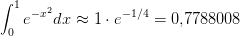, de um vetor em 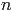
por:
, 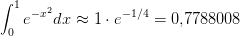, de um vetor em 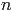
por:
Quando lidamos com matrizes no corpo do números reais (ou complexos), existem apenas duas alternativas: i) a matriz é inversível; ii) a matriz não é inversível e, neste caso, é chamada de matriz singular. Ao lidarmos em aritmética de precisão finita, encontramos uma situação mais sutil: alguns problema lineares são mais difíceis de serem resolvidos, pois os erros de arredondamento se propagam de forma mais significativa que em outros problemas. Neste caso falamos de problemas bem-condicionados e mal-condicionados. Intuitivamente falando, um problema bem-condicionado é um problema em que os erros de arredondamento se propagam de forma menos importante; enquanto problemas mal-condicionados são problemas em que os erros se propagam de forma mais relevante.
Um caso típico de sistema mal-condicionado é aquele cujos coeficiente estão muito próximos ao de um problema singular. Considere o seguinte exemplo:
Exemplo 4.5.1. Observe que o sistema
|
| (4.23) |
é impossível quando 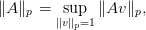.
Considere os próximos três sistemas:
Pequenas variações nos coeficientes das matrizes fazem as soluções ficarem bem distintas, isto é, pequenas variações nos dados de entrada acarretaram em grandes variações na solução do sistema. Quando isso acontece, dizemos que o problema é mal-condicionado.
Precisamos uma maneira de medir essas variações. Como os dados de entrada e os dados de saída são vetores (ou matrizes), precisamos introduzir as definições de norma de vetores e matrizes.
Definimos a norma , 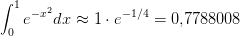, de um vetor em 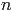
por:
|
|
Para 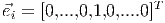, definimos a norma 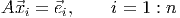 (norma do máximo) por:
|
|
Proposição 4.5.1 (Propriedades de normas). Sejam dados um escalar e os vetores 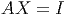. Então, para cada 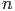, valem as seguintes propriedades:
 .
.
 .
.
Demonstração. Demonstramos cada item em separado.
|
|
Isto é, 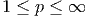. Agora, se  , 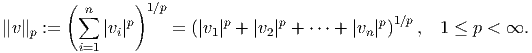, então:
, 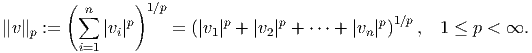, então:
 |
Logo, pelo resultado para a norma do máximo, concluímos que 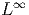.
Solução.
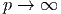
Definimos a norma induzida 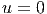 de uma matriz 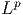 da seguinte forma:
|
|
ou seja, a norma 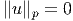 de uma matriz é o máximo valor assumido pela norma de 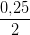 entre todos os vetores de norma unitária.
Temos as seguintes propriedades, se 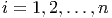 e 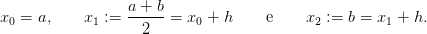 são matrizes, 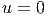 é a matriz identidade, 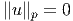 é um vetor e 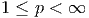 é um real (ou complexo):

Casos especiais:
Solução.
O condicionamento de um sistema linear é um conceito relacionado à forma como os erros se propagam dos dados de entrada para os dados de saída, ou seja, se o sistema

Queremos avaliar a magnitude do erro relativo em y, representado por em função da magnitude do erro relativo .

Assim, definimos o número de condicionamento de uma matriz inversível  como
como
O número de condicionamento, então, mede o quão instável é resolver o problema frente a erros no vetor de entrada .
Obs: O número de condicionamento depende da norma escolhida.
Obs: O número de condicionamento da matriz identidade é .
Obs: O número de condicionamento de qualquer matriz inversível é igual ou maior que .
 e 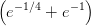 do vetor coluna
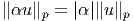.
e 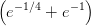 do vetor coluna
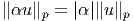.